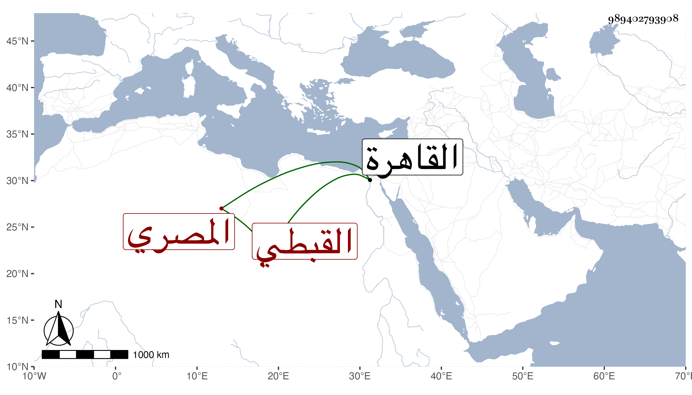

0902Sakhawi.DawLamic.ITO20230111-ara1.EIS1600.989402793908
Biography ID: 989402793908
833
عبد الكريم بن بركة كريم الدين بن سعد الدين القبطي المصري والد إبراهيم ويوسف ويعرف بابن كاتب جكم . ولد بالقاهرة وبها نشأ فتعانى كأبيه الكتابة وخدم في جهات وباشر لغير واحد من الأمراء ثم اتصل بالاشرف برسباي حين كان دوادارا وباشر ديوانه فلما تملك استقر به في نظر الدولة ثم في الخاص عوضا عن البدر حسن بن نصر الله في جمادى الأولى سنة ثمان وعشرين فباشرها سنين وعظم عند السلطان ونالته السعادة الدنيوية بحيث قيل أنه منذ ولي وإلى أن مات لم يبطل الواصل عنه يوما واحدا فأثرى وشكرت سيرته مع تواضعه وكرمه ومعرفته وعقله مات في ليلة الجمعة سادس عشري ربيع الأول سنة ثلاث وثلاثين بدون طاعون بل بمرض تمادى به أشهرا واستقر بعده في الخاص ولده سعد الدين إبراهيم وهو أمرد عفا الله عنه وإيانا ، وذكره شيخنا في أنبائه فقال كان أبوه يخدم الوزير علم الدين بن كاتب سيدي ثم تعلق بخدمة الأمراء فكتب عند الأمير جكم فعرف به ، وصاهر تاج الدين بن الهيصم قيل أن يلي الاستادارية قال وباشر الخاص بسكون وحشمة ونزاهة ، وأكثر من زيارة الصالحين ومن الفقراء وألزم والديه بالاشتغال بالعلم وأحضر إليهما من يعلمهما الكتابة والعربية ، ونحوه قول العيني لم يكن به بأس ، وكان كثير الصدقة حسن التلقي ، وهو في عقود المقريزي .
